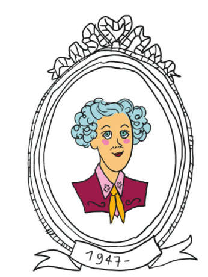

德语线上图书馆
Deutsche Bibliothek
读书会书单 · 逐句精读：点单词发音，中文可遮住自测，每页可留言讨论
♥ 为爱发电：小怪
202610–12 月

10 月
她们的传奇
Unerschrocken
Pénélope Bagieu漫画 · 人物传记
十五位不畏世俗的女性，一人一篇漫画小传。
10 个故事
11 月
小狗钱钱
Ein Hund namens Money
Bodo Schäfer儿童理财
一只会说话的狗，教女孩吉娅理财。
2 章已上线鸭子、死神与郁金香Ente, Tod und TulpeWolf Erlbruch
12 月
鸭子、死神与郁金香
Ente, Tod und Tulpe
Wolf Erlbruch绘本
鸭子遇见死神，一段温柔的告别。
即将开始20271–12 月
今日心理学Psychologie HeuteMonatsmagazin
1 月
今日心理学
Psychologie Heute
Monatsmagazin心理学杂志
德国心理学月刊，把研究讲成日常生活里用得上的话。
即将开始当下的力量Jetzt! Die Kraft der GegenwartEckhart Tolle
2 月
当下的力量
Jetzt! Die Kraft der Gegenwart
Eckhart Tolle心灵成长
活在当下，从思绪里抽身。
即将开始毛毛MomoMichael Ende
3 月
毛毛
Momo
Michael Ende奇幻小说
灰先生偷走了人们的时间，小女孩毛毛把它找回来。
即将开始女性心理学Die Psychologie der FrauKaren Horney
4 月
女性心理学
Die Psychologie der Frau
Karen Horney心理学经典
重新理解女性心理，挑战弗洛伊德的旧观念。
即将开始战争之中Im KriegNora Krug
5 月
战争之中
Im Krieg
Nora Krug图像小说
两位普通人在战争中的日记，图文交织。
即将开始老白男Alte weiße MännerSophie Passmann
6 月
老白男
Alte weiße Männer
Sophie Passmann社会观察 · 对谈
和“老白男”们坐下来聊一聊。
即将开始海外之舌ÜberseezungenYoko Tawada
7 月
海外之舌
Überseezungen
Yoko Tawada散文
在语言之间旅行，词语生出新的意思。
即将开始最小公共现实Die kleinste gemeinsame WirklichkeitMai Thi Nguyen-Kim
8 月
最小公共现实
Die kleinste gemeinsame Wirklichkeit
Mai Thi Nguyen-Kim科普
用科学找到我们都能同意的事实。
即将开始下半身自由Unten rum freiMargarete Stokowski
9 月
下半身自由
Unten rum frei
Margarete Stokowski女性主义
从身体到政治，谈性别与自由。
即将开始过度纤细的身体Corpus DelictiJuli Zeh
10 月
过度纤细的身体
Corpus Delicti
Juli Zeh反乌托邦小说
健康至上的国家里，一个女人的反抗。
即将开始德国母亲Die deutsche MutterBarbara Vinken
11 月
德国母亲
Die deutsche Mutter
Barbara Vinken文化研究
“德国母亲”这一形象从何而来。
即将开始原子习惯Die 1%-MethodeJames Clear
12 月
原子习惯
Die 1%-Methode
James Clear习惯养成
每天进步一点点，小习惯带来大改变。
即将开始